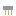
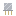

Bonded Chip・アイテム・Semiconductor
本当の歴史：[9-33] ワイヤーボンディング（1957年）
①子ども チップのパッドとヘッダーの足を、細い金の線でつないだもの。まだ裸なので、封止がいる。
②学生 ワイヤーボンダー [9-33] で作る（チップの中身を引き継ぐ）。封止 [9-34] で金属の缶かエポキシに入れると完成。
③大人 金の線はチップのアルミのパッドに、熱と圧力でくっつけてある（熱圧着）。パッドの数だけ線がある。
④ガチ 今の工場では、1秒に20本以上の線を自動でつなぐボンダーが動いている。

